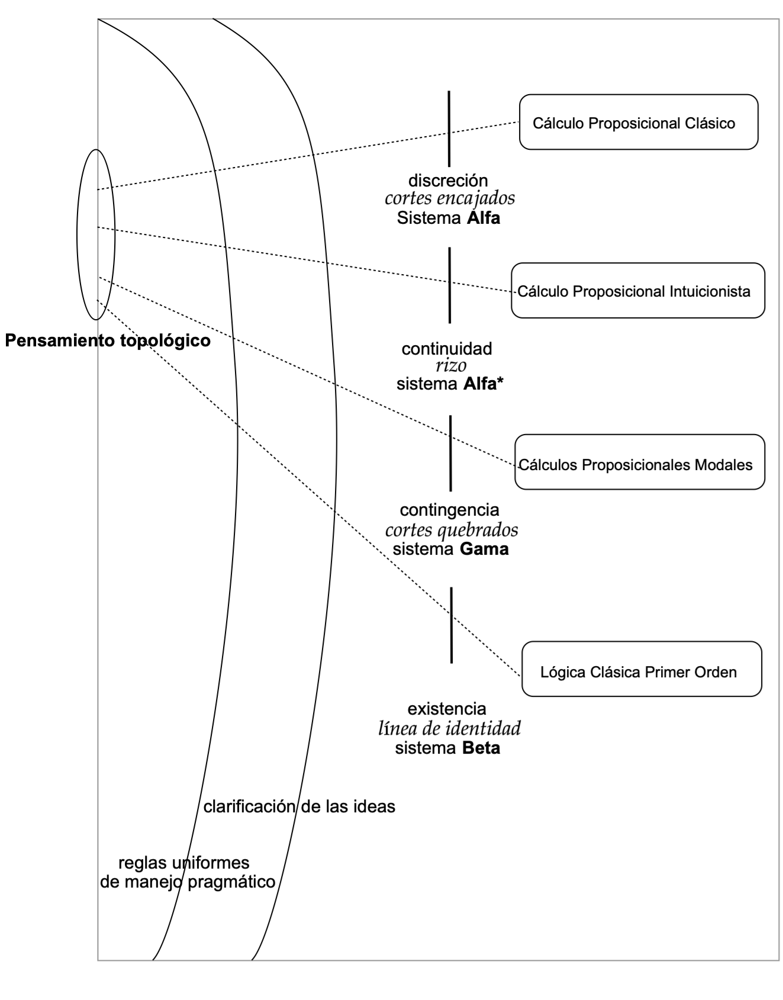
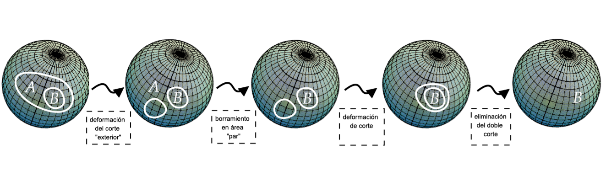
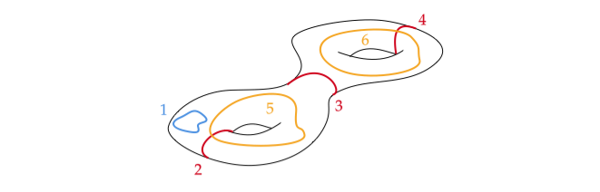

5 Topos de Gráficos Existenciales sobre Superficies de Riemann
Introducción
Este trabajo1 se sitúa en lo que podemos llamar una “geometrización de la matemática", o más concretamente, una geometrización de la lógica. Tal propuesta se sitúa en un panorama matemático que se encuentra regido por los topos de Grothendieck, los cuales, tras su tránsito a topos elementales, abren el estudio de diversas lógicas particulares. Por otro lado, los gráficos existenciales de Peirce ofrecen una profunda visión topológica de la lógica, construida sobre transformaciones locales de curvas de Jordan a través del plano complejo. Esta perspectiva se ha ampliado en la última década, con la aparición de gráficos existenciales sobre superficies no planas (esfera, cilindro, toro), donde las herramientas geométricas adquieren mayor preponderancia. Utilizando entonces técnicas de haces y topos, aplicadas a conceptos sobre superficies de Riemann, obtenemos una visión de gráficos existenciales alternativos, relacionados con propiedades intrínsecas y extrínsecas, locales y globales, de las lógicas geométricas asociadas.
Gráficos Existenciales (GE)
Al recorrer los gráficos existenciales (GE) sobre el plano, sus construcciones básicas, sus reglas y la unicidad de sus axiomatizaciones, obtenemos una variedad de lógicas asociadas, mediante una presentación enteramente diagramática, coherente y unitaria. Los modelos \(Alfa\) y \(Beta\) de (GE) constituyen por sí mismos un tratamiento completo (Roberts 1992)2 y consistente de la lógica elemental (clásica y de primer orden, respectivamente) (Roberts 1963)3. Desarrollos posteriores proponen un nivel \(Gama\) asociado al razonamiento fuera de la lógica clásica, que cubre no sólo el dominio modal (Zeman 1964)4, sino también algunas lógicas de orden superior. Con ciertas transformaciones adicionales en la sintaxis, estos (GE) se han extendido también hacia la lógica intuicionista, mediante un modelo \(Alfa*\) (Oostra 2010)5, correspondiendo al hecho de que una semántica natural para la lógica intuicionista viene dada por los espacios topológicos (Tarski 1938)6.

Así, con reglas uniformes y ligeras variaciones en los signos, obtenemos una imagen amplia de la lógica a partir de la geometría (ver Figura 1). Dentro de este sistema (GE), el lenguaje se da mediante letras proposicionales y su combinación con curvas cerradas (cortes) entendidas como negaciones. Tales elementos (afirmaciones y cortes) se sitúan en un fondo continuo (inicialmente, un plano complejo) y la deducción se manifiesta bajo deformaciones suaves en curvas y permisos duales como escritura/borrado, iteración/desiteración, o doble corte, dados en función del nivel y de la paridad en áreas asociadas a los cortes en los gráficos. Una forma precisa de lectura proporciona una interpretación unívoca, denominada método endoporéutico (Pietarinen 2004)7, cuya especificidad y potencia técnica se obtienen gracias a la operación de (des)iteración.
Mediante un pensamiento topológico, los diversos sistemas derivados \(Alfa\), \(Alfa*\), \(Beta\), \(Gama\) son guiados por conductas transversales en las que intervienen las reglas sintácticas y su posterior clarificación semántica. Esto unifica las diversas nociones empleadas en los subsistemas y les confiere un significado universal en un sistema lógico como un todo (GE), que es consistente y completo. Las mediaciones están guiadas por un motivo integral clarificado en los signos involucrados (corte, rizo, línea de identidad y corte quebrado), siguiendo un sistema uniforme de reglas, que da un sentido coherente al pensamiento lógico.
Por otro lado, siguiendo los trabajos de Oostra y su escuela en Ibagué, obtenemos una descripción del comportamiento de las lógicas internas asociadas a algunas superficies no planas, a través de un desglose técnico de propiedades topológicas (geométricas), allende las negaciones como curvas complejas trazadas sobre la superficie de cada variedad (Oostra 2018)8. El despliegue de las fórmulas sobre dos dimensiones debería poder completarse, ya que la bidimensionalidad no está reservada al plano. Por ejemplo, podemos pensar en la esfera, el cilindro, el toro y, de manera más general, en una superficie de Riemann, sobre las que podemos elucidar nuevas vías lógicas, que habrían permanecido invisibles desde la perspectiva plana.
Gracias a ello, se configura un tránsito natural entre dos o más áreas de las matemáticas, y se genera una cuestión fundamental de carácter dual que involucra la sintaxis, la semántica y la pragmática de las lógicas asociadas a gráficos existenciales sobre superficies: ¿Cómo podemos asociar a lógicas conocidas, el resultado de la mutación de sistemas lógicos a través de una superficie? y, recíprocamente, ¿Cómo podemos hacer corresponder a una lógica dada un sistema adecuado en gráficos existenciales sobre una superficie concreta? (Oostra 2022)9. Así, en el espacio existente entre el estudio de los Sistemas Lógicos y la comprensión de la Naturaleza de las Superficies, surgen las múltiples Variaciones de Gráficos Existenciales.
Al situar las negaciones en entornos complejos, estas captan la naturaleza geométrica de la variedad, y en algunos casos necesitamos restricciones o reglas adicionales para mantener el sentido y la coherencia de los nuevos gráficos \(Alfa\). Por ejemplo, para preservar las nociones de paridad y nivelación, asociadas a entornos que permitan la (des)iteración y el uso de las reglas de inferencia del sistema, necesitamos la adición de nuevos conceptos que posibiliten sus interpretaciones. En este sentido, una noción de oposición permite distinguir lógicamente dos regiones separadas por una curva en la superficie, que en principio son topológicamente indistinguibles (pero cuyo contenido de verdad es la negación de lo que hay al otro lado de la curva), pues tal curva puede deformarse suavemente en la superficie y configurar un nuevo cerramiento, como en el caso de la esfera. Observamos que, si no delimitamos el entorno, podemos llegar a deducciones contradictorias a partir de cualquier gráfico, hecho que se ilustra en la siguiente figura:

Introduciendo nuevas condiciones, proporcionando interpretaciones precisas para ciertas clases de curvas problemáticas, y añadiendo restricciones sobre las superficies (respecto a las curvas no contractibles), los gráficos existenciales \(Alfa\) pueden ser modelados sobre la esfera, el cilindro, la banda de Möbius o el toro. En este último caso, por ejemplo, se pueden dibujar en su superficie \(3\) clases diferentes de curvas salvo isomorfismo, y sólo una de ellas será contractible, es decir, el mapa del círculo unitario a la superficie que dibuja la curva en cuestión, que resulta ser homotópico a una función constante. Estas curvas son compatibles con las transformaciones habituales (GE), generando una versión alternativa y equivalente de la lógica proposicional clásica, como ocurre con los gráficos existenciales \(Alfa\) en el plano (Oostra 2020)10. Existen diversas clases de curvas en cada superficie, en función de su naturaleza geométrica, y cada una de estas corresponde a un tipo de negación en la superficie, caracterizadas en razón de su contractibilidad y su localidad a nivel topológico. En particular, una curva contractible está aparentemente asociada al dominio clásico, y una curva no contractible está asociada a ámbitos más allá de la lógica clásica. Podemos así vislumbrar que, tomando todas las negaciones (locales y globales, ver Sección 2) asociadas a curvas arbitrarias presentes sobre superficies localmente homeomorfas a \(\mathbb{C}\), podemos abrir una senda a nuevas lógicas.
Superficies de Riemann (SR)
Para formalizar estas extensiones es útil pasar por las superficies de Riemann (SR), ya que éstas encarnan las condiciones de suavidad y continuidad necesarias para un despliegue de nuestros gráficos. Además, el uso de (SR) resulta coherente tanto con las definiciones clásicas de Peirce, como con la bibliografía posterior no clásica. Llegamos a un contexto que contiene entornos locales isomorfos al plano, pero que al mismo tiempo admite singularidades donde la superficie se extiende a través de sus puntos de ramificación, o sus polos. La plenitud geométrica de la variable compleja impulsa entonces la posibilidad de potenciar conceptos lógicos a través de nuevas geometrías.
Algunas de estas geometrías corresponden a los tres arquetipos de geometrías codificados en el siglo XIX: la geometría parabólica (modelo de Euclides), la geometría hiperbólica (modelo de Poincaré) y la geometría elíptica (modelo de Riemann), que provienen de la aplicación de espacios cocientes sobre el plano, el disco y la esfera respectivamente. Estos modelos se recogen en la descripción hecha anteriormente mediante gráficos, y gracias al Teorema de Uniformización de Riemann, sabemos que corresponden a una alternativa exclusiva, ya que toda superficie de Riemann simplemente conexa (“sin agujeros”) surge, salvo homeomorfismo, de una de estas tres posibilidades (Zalamea 2020)11.
Hermann Weyl mostró que una superficie de Riemann puede definirse como la complejización natural de una superficie topológica. Su definición se da en tres pasos (Zalamea 2022)12:
Una variedad topológica \(2\)-dimensional \(X\) es un espacio topologico de Hausdorff donde todo punto posee una vecindad homeomorfa a un abierto de \(\mathbb{R}^2\);
Una estructura compleja sobre \(X\) consiste en un “atlas", o familia de”mapas", \(\{(U_{i},\varphi_{i}): i \in I\}\) tal que \(U_{i}\) es abierto en \(X\), el atlas recubre \(X\) (\(\bigcup_{i \in I} U_i = X\)), los mapas son fieles (\(\varphi_i : U_i \to \varphi (U_i)^{\rm abierto} \subseteq \mathbb{C}\) es homeomorfismo), y los tránsitos son analíticos (para cada par de mapas \((U_i, \varphi_i )\), \((U_j, \varphi_j )\), \(\varphi_j \circ \varphi_i^{-1}: \varphi_i (U_i \cap U_j) \to \varphi_j (U_i \cap U_j)\) es holomorfa);
Una superficie de Riemann (SR) se define entonces como una variedad topológica 2-dimensional conexa \(X\) con una estructura compleja sobre \(X\).
Como las funciones de transición entre los mapas son analíticas, estas deben cumplir las condiciones de Cauchy-Riemann (Needham 1997)13, y por lo tanto su Jacobiano es mayor que cero. Así, el hecho de que las cartas sean compatibles fuerza una orientación sobre la variedad: toda (SR) resulta ser orientable (Kumaresan 2002)14. Otra noción fundamental en superficies es el género, definido como el número mínimo de cortes (menos 1) que desconectan la superficie (Ahlfors 1953)15. El género proporciona un invariante intrínseco (geométrico-topológico) de la superficie: se obtiene gracias a recorridos sobre la superficie, sin salirse de ella. Un resultado matemático profundo capturado a través de tal concepto es el Teorema de Riemann-Roch, que permite reconstruir el género de una (SR) como invariante extrínseco (diferencial-complejo) de la superficie: saliendo de la superficie y comparándola de múltiples maneras (funciones holomorfas y meromorfas) con su entorno.
Una vez el panorama complejo y diferencial ha sido elucidado, a través de la caracterización dual de las propiedades lógicas y geométricas de las superficies, proponemos una nueva distinción lógica. Las negaciones locales y globales sobre una superficie (ver Definición 1 a continuación), dependerán de la naturaleza de las curvas asociadas, puesto que en superficies arbitrarias localmente homeomorfas a \(\mathbb{C}\) las curvas de Jordan permiten captar formas de negación en los (GE).
Definición 1 (Negaciones locales-globales).
Dada una superficie de Riemann \(X\), diremos que una negación (asociada a una curva de Jordan \(C\)) es local si existen un atlas para \(X\) y una vecindad \(V\) en el atlas tales que \(C \subseteq V\) y \(C\) es contractible (deformable homotópicamente a un punto en la vecindad). Por otro lado, diremos que la negación es global en caso contrario.
Al aplicar esta definición a algunas (SR) simples estudiadas desde los modelos de gráficos sobre superficies, emergen los siguientes hechos:
- En el plano y en el disco, las nociones de localidad y globalidad coinciden, y toda negación es a la vez local y global.
- En el cilindro, en cambio, las nociones de localidad y globalidad se distinguen; las negaciones sobre la superficie que no rodean al cilindro son locales; un giro entero al cilindro es en cambio una negación global, no local.
- En la esfera, la localidad y la globalidad también se distinguen; las negaciones que quedan enteramente sumergidas en un lado del atlas son locales; por otro lado, una negación “maximal" (paralelo de tipo ecuatorial) no es localizable en una vecindad, y se trata de una negación global.
- En el toro, de los tres tipos de negaciones vislumbrados, solo un tipo es local, mientras que los otros dos tipos (cortes longitudinales y transversales) son globales.
Con estas nociones de localidad y globalidad, el comportamiento paradójico de la negación en la esfera puede explicarse parcialmente (ver Figura 1). En efecto, en las deformaciones de una curva de Jordan en la esfera, una negación local y una negación global pueden identificarse accidentalmente: cuando una pequeña curva de Jordan en un lado del atlas migra hacia el otro del atlas, la negación pasa de ser local a global, para luego volver a lo local. Un sistema lógico que restrinja esos pasos (e.g., aceptando deformaciones solo dentro de lo local) podría entonces ayudar a eliminar el comportamiento contradictorio de la negación.
Podemos introducir el concepto de lógica local y global (ver Definición 2), para capturar toda una variedad de perspectivas: clásica, intermedia, intuicionista o paraconsistente. Más aún, el número de negaciones no clásicas en nuevas lógicas puede capturarse gracias al género de la superficie.
Definición 2 (Lógica Local-Global).
Una lógica de (GE) sobre (SR) es local si todas sus negaciones son locales. Una lógica es global si existe al menos una negación global en el sistema.
A partir de los hechos considerados sobre las negaciones en los diversos sistemas, planteamos la siguiente conjetura:
Conjetura 1 (Oostra-Zalamea-Hugueth).
Toda lógica local* de (GE) sobre una (SR) es (super)intuicionista.*
La lógica global* de (GE) sobre la esfera es paraconsistente.*
Las lógicas de (GE) globales sobre (SR) de género \(n \geq 1\) son no clásicas, con exactamente \(3n\) nociones asociadas de “negación".
En el caso del género 0 (plano, disco o esfera, por el Teorema de Uniformización), las lógicas locales contemplan negaciones siempre reducibles a un punto sobre la superficie, como sucede en el caso intuicionista. En el caso del género 1 (toro) aparecen exactamente 3 nociones de negación, dos de las cuales (cortes longitudinales) no pueden ser reducibles a combinaciones de negaciones locales.
Un breve esbozo de esta situación también se visualiza en la Figura 2, caso que no fue estudiado a profundidad, pero que sirve para situarnos mejor en el entorno planteado y que podría quizás resultar como motivación para futuros trabajos. Notamos que sobre un toroide de dos agujeros (superficie de género 2), existen 6 clases de negaciones, ninguna de ellas deformable en la otra, de las cuales 5 no serán reducibles a un punto (puesto que son de tipo no contractible), y por tanto no estarán ligadas a combinaciones de negaciones locales.

Topos (T)
La continuación analítica en variable compleja muestra cómo los dominios de una función analítica dada pueden ser extendidos, definiendo valores adicionales que permitan escapar de posibles divergencias. Tenemos entonces una doble dialéctica entre funciones analíticas univaluadas (en vecindades locales) y funciones analíticas multivaluadas (en la variedad global considerada). Este paso puede ser resuelto si el pegamiento de las funciones es independiente de los caminos por los que son pegadas, i.e., si se tiene una expectativa de invarianza allende la multiplicidad, cosa que puede realizarse si la región es simplemente conexa (Teorema de Monodromía). Los haces (que son la extensión abstracta de la continuación analítica) nos proporcionan una visión dúctil para enlazar lo local y lo global, atravesando tanto los fundamentos precisos en topología que requiere nuestra propuesta, como también las herramientas del análisis complejo y las categorías. Esta perspectiva reconstruye el entendimiento de una variedad topológica o diferencial gracias a sus proyecciones en variedades inferiores y a la información coherente de sus fibras (Mac Lane, Moerdijk 1992)16.
Resulta entonces natural el tránsito a los topos de Grothendieck (TG), al tomar todos los haces sobre un sitio, es decir, un lugar con una extensión abstracta de topología. Un topos representa una conexión fuerte entre dos tendencias del pensamiento matemático (espacio y número), ahondando en las definiciones más antiguas de la matemática alrededor de lo continuo y lo discreto. Un “estudio sofisticado de las interacciones entre el espacio y el número" aparece, por un lado, en la geometría, que capta el espacio y, por otro, en la aritmética, que capta el número (Zalamea 2020)17. Extendiendo la situación clásica de la topología, un topos de Grothendieck será precisamente, por definición, una categoría equivalente a una categoría de haces \(Sh(\mathbf{C}, J)\) sobre un sitio \((\mathbf{C}, J)\), es decir, una categoría \(\mathbf{C}\) junto con una topología de Grothendieck \(J\) (una tal topología representa sintéticamente las propiedades de recubrimiento de los abiertos en topología usual: el espacio se recubre a sí mismo, cubrimiento de cubrimientos es cubrimiento, pullback de cubrimiento es cubrimiento). Un haz sobre el sitio es, intuitivamente, un prehaz que”pega bien" las secciones traslapables. Este buen pegamiento puede ser descrito en términos de propiedades de cubrimiento en “locales" (álgebras de Heyting completas, que codifican las propiedades del retículo de abiertos de una topología), cubrimientos que, a su vez, pueden caracterizarse por buenas propiedades de extensión.
Los enlaces entre geometría algebraica y lógica pueden capturarse mejor a través de los topos elementales (TE), al considerar el clasificador de subobjetos del topos, herramienta que describe, precisa y formalmente, el comportamiento de la lógica inherente al topos en cuestión. Una categoría \(\mathcal{E}\) es un topos elemental si posee límites finitos, es cartesiana cerrada (i.e., existen objetos exponenciales, con buenas propiedades de naturalidad, o, lo que es lo mismo, el funtor producto posee adjunto derecho), y, además, el funtor de subobjetos \(Sub : \mathcal{E}^{op} \rightarrow Con\) es representable (o lo que es lo mismo, existe un clasificador de subobjetos \(\Omega\) tal que \(Sub(A) \approx \mathcal{E}(A,\Omega)\) es isomorfismo natural). Una intuición fundamental detrás de los topos es que estos actúan en la intersección de conceptos geométricos (Grothendieck) y lógicos (Lawvere)18.
En un topos de prehaces \(\mathcal{E} = {Con}^{\mathcal{C}^{op}}\) el clasificador de subobjetos es forzado vía Yoneda: \(Sub(h_{A}) \approx \mathcal{E}(h_{A}, \Omega) = Nat(h_{A}, \Omega) \approx \Omega(A)\), por lo tanto, \(\Omega : \mathcal{C}^{op} \rightarrow Con\) puede definirse por la correspondencia (en objetos) \(A \mapsto Sub(h_{A})\) y (en morfismos) \((A \rightarrow B) \mapsto (\Omega_{f}: Sub(h_{A}) \rightarrow Sub(h_{B}))\). El lema de los pullbacks asegura que \(\Omega_{f}\) es funtor, la transformación resulta ser natural, y \(\Omega\) está bien definido. Como la inmersión de Yoneda es densa (es decir, todo prehaz es límite de funtores representables, \(F= \varinjlim h_A\)), la descripción \(Sub(-) \approx Nat (-, \Omega)\) se extiende a todos los prehaces en el topos.
La lógica interna de un topos se deriva de ciertas propiedades de exactitud en el topos. En principio, todo depende de mostrar que, para todo \(a\) en el topos, \(0 \rightarrowtail a\) es mono. Esto se deriva de los tres hechos siguientes (que valen en cualquier categoría cartesiana cerrada con objeto inicial \(0\)): (i) \(a \times 0 \approx 0\) (usando el hecho \(\mathcal{E}(a \times 0, b) \approx \mathcal{E}(0,b^{a})\), esto es, la propiedad exponencial, resulta que el único morfismo emergente de \(0\) y el único morfismo emergente de \(a \times 0\) fuerzan el isomorfismo con \(0\)), (ii) si existe \(f:a \to 0\) entonces \(a \approx 0\) (por propiedades de proyección y composición en productos), (iii) toda flecha que entra en \(0\) fuerza un isomorfismo (por (ii)), por tanto la flecha es mono.
Tomando funciones características (\(\chi\)) de monos (\(m\)), provistas por pullbacks en el clasificador de subobjetos, gracias al hecho de que \(0 \rightarrowtail 1\) es mono, podemos realizar una construcción natural de conectivos en el topos. Véanse en ese sentido los ítems (1)-(5) abajo, construidos recursivamente sobre cada mono emergente en cada nivel:
Falsedad: \(\bot \ = \ \chi_{ 0 \rightarrowtail 1}\)
Negación: \(\neg \ = \ \chi_{ \bot}\)
Conjunción: \(\wedge \ = \ \chi_{ <\top,\top>}\)
Implicación: \(\Rightarrow \ = \ \chi_{ eq(\wedge, \pi_1)}\)
Disyunción: \(\vee \ = \ \chi_{ im[id \times \top, \top \times id]}\).
Estas construcciones expresan, mediante morfimos, las construcciones usuales de conectivos como operadores sobre \(\{0,1\}\). Además, en todo topos tendremos siempre que \(Sub(\Omega)\) es un álgebra de Heyting, lo que apunta a una lógica intuicionista subyacente. Puede probarse el hecho de que deducibilidad en el cálculo proposicional intuicionista es equivalente a validez en toda álgebra de Heyting, a su vez equivalente a validez en todo topos.
Los haces se encuentran en la intersección de una multitud de conceptos matemáticos: variable compleja (procedente de la continuación analítica de Riemann), geometría diferencial (procedente de los trabajos de Leray en ecuaciones diferenciales), álgebra abstracta (procedente de las formalizaciones de la escuela francesa, vía Cartan, Lazard, Godement, Serre), geometría algebraica (procedente de los trabajos de Grothendieck en categorías abelianas, Riemann-Roch, esquemas, topos), lógica (procedente de las axiomatizaciones en primer orden de Lawvere, hasta la lógica de los haces de Caicedo), etc. Los haces constituyen por tanto un concepto realmente central y primordial para nuestro entendimiento actual del mundo matemático. En lo que sigue de este trabajo, pensaremos los gráficos existenciales como haces, no solo sobre el plano sino también sobre otras superficies de Riemann, y nos adentraremos en la colección (topos) de todos esos diversos haces de gráficos existenciales.
Visión Combinatoria - Categórica
La ventaja de una lectura categórica de un tema matemático reside en la extensión del ámbito de posibilidades que ofrece la abstracción. En un topos elemental las nociones de localización, topologización y sistematización intuicionista coinciden. Así que, apuntando a una traducción estructural de nuestro sistema, que es la propuesta central de nuestro trabajo, apelamos a algunos desarrollos recientes de Gangle y colaboradores, cuyos aportes recientes permiten dar el último paso hacia una axiomatización consistente de nuestro modelo (Gangle et.al., 2022)19. El enfoque de Gangle provee una lectura combinatoria de los encajes de cortes \(Alfa\) (modelo de la lógica clásica) vía árboles, una visión de árboles como prehaces, y un entrelazamiento de marcas estáticas y variables para capturar ocurrencias de letras proposicionales. Esto permite obtener una categoría de objetos que representan sintácticamente los gráficos existenciales \(Alfa\). Una notación lógica aguda, como los (GE), organiza relaciones entre las componentes de su sintaxis, de manera que las propiedades lógicas y las relaciones bajo una interpretación concreta, regida bajo reglas de tratamiento simples, sean precisas e inequívocas. La sintaxis diagramática ofrecida en el sistema de Peirce provee un entorno natural de distinción en las relaciones entre las combinaciones sintácticas de elementos en un argumento. Al reconstruir este razonamiento diagramático mediante una adecuada categoría de funtores (más precisamente, categoría de prehaces), podemos diversificar la riqueza de la estructura subyacente en el nivel \(Alfa\). Aquí, los morfismos obedecen a jerarquías en la estructura acorde al origen y destino de las flechas de los grafos dirigidos que representan nidos de cortes desde los (GE). Podemos ver cada elemento en la clase de estructuras como un funtor contravariante concreto que recoge relaciones entre cortes y los representa conjuntísticamente.
De manera precisa (Gangle et.al., 2022)20, observan que los encajes (nidos) de cortes \(Alfa\) se pueden poner en correspondencia (*) con árboles finitos, asociando un nodo a un corte, y una ramificación a un encaje (siguiendo el método endoporeutico). Un ejemplo de esta correspondencia (*) se observa en la figura siguiente:
Si \(\mathcal{C}_{(\mathbb{N}, \leq)}\) denota la categoría correspondiente al conjunto ordenado \((\mathbb{N}, \leq)\), sea \(\mathcal{F} = Con^{\mathcal{C}_{(\mathbb{N}, \leq)}^{op}}\) la categoría de prehaces asociada (“bosques"). Definimos una subcategoría \(\mathcal{E} \subseteq \mathcal{F}\) cuyos objetos son los funtores \(F\): \({\mathcal{C}_{(\mathbb{N}, \leq)}^{op}}\) \(\to\) \(ConFin\) (i.e., prehaces finitarios) que”terminan en finitos pasos" (i.e., para los cuales existe \(n\), con \(Fn=\emptyset\)). Gracias a la correspondencia (*), \(\mathcal{E}\) modela correctamente los encajes de cortes \(Alfa\). Los morfismos de \(\mathcal{E} = \mathcal{GE}_{\alpha^{*}}\) son monos entre los mismos objetos en \(\mathcal{F}\).
Yendo más allá, (Gangle et.al., 2022, sección 4)21 reconstruye un gráfico \(Alfa\) como un encaje de cortes con variables adicionales (“marcas"). Esta adición se obtiene mediante un nuevo funtor que registra esas apariciones de variables. Formalmente, si \(F \in \mathcal{E}\) es un encaje de cortes, un gráfico”distinguido" \(Alfa\) sobre el “esqueleto" \(F\) (nuestra terminología) se define como un par \((F, \widehat{F})\) donde \(F, \widehat{F} \in \mathcal{E}\) son tales que \(F \rightarrowtail \widehat{F}\) y se tiene una condición de iteración y control de encajes que captura la aparición de distintas letras proposicionales, las cuales se reemplazan por cortes \(Alfa\) vacíos en las áreas donde aparecen las variables (= pseudografos, en la terminología de Peirce). Comparando los encajes resultantes de ambos procesos al ser pasados por el funtor \(\widehat{F}\), notamos que \(F\) se inyecta canónicamente en \(\widehat{F}\). Así, podemos hacer corresponder un gráfico con marcas (letras o variables) a un par ordenado \((F, \widehat{F})\), con \(F\) y \(\widehat{F}\) gráficos de solo cortes, que se pueden describir como algún funtor de \(\mathcal{C}^{op}_{(\mathbb{N},\leq)}\) en \(ConFin\) tal que, para algún \(n\), su imagen sea no vacía. Para representar gráficos \(Alfa\) a cabalidad (i.e. con repeticiones de eventuales letras), Gangle y colaboradores introducen una acción monoidal \(T\) sobre los gráficos distinguidos (las órbitas dan lugar entonces a una identificación de letras). Esto finalmente da lugar a una categoría \(\mathcal{GE_{\alpha}}\) formada por triplas \((F, \widehat{F}, T_{(F, \widehat{F})} )\), una construcción que captura plenamente, en lenguaje categórico, la sintaxis de los gráficos \(Alfa\).
El Topos de Gráficos Existenciales (\(Alfa\)) sobre Superficies de Riemann (TGESR)
La construcción Gangle-Caterina-Tohme de \(\mathcal{G}\mathcal{E}_{\alpha}\) se basa fuertemente en una propiedad de “normalidad" (nuestra terminología) de los encajes de cortes planares, es decir, donde una nivelación de áreas (con nociones bien definidas de paridad e imparidad) queda registrada. Esto corresponde a una ramificación de los árboles asociados: tanto los niveles (de los cortes), como las ramas (de los árboles), muestran una progresión creciente en los segmentos finitos de (\(\mathbb{N}, \leq\)), indicadores de \(ConFin^{\mathcal{C}_{(\mathbb{N}, \leq)}^{op}}\). Sin embargo, la situación puede llegar a ser enteramente distinta en el caso de los gráficos (no planares) sobre (SR) generales. Un ejemplo de esto es cómo un doble corte sobre la esfera, representado por un árbol de tipo \(2\), puede ser deformado en dos cortes separados sobre la esfera, representados por un árbol de tipo \(1+1\). En tal caso, se pierden las nociones de progresión, nivelación, ramificación. Solo se preservan estas nociones en el caso de los sistemas restringidos a negaciones locales, y en ese caso las lógicas de \(\mathcal{GE}_{\alpha}\) (GE sobre el plano) y \(\mathcal{GE_{SR}}\) (GE sobre SR) coinciden.
Gracias a las nociones de localidad/globalidad y de linealidad/no linealidad, el tránsito de los gráficos existenciales sobre el plano hacia gráficos existenciales sobre superficies de Riemann puede entenderse como un tránsito complejo/diferencial/homológico entre lo local lineal y lo global no lineal, que emerge naturalmente en ecuaciones diferenciales, variable compleja y teoría de haces. Aquí, por vez primera, se registra ese tránsito con herramientas lógicas y mediante propiedades puramente estructurales (generadores y adjunciones) de las categorías e inmersiones en juego.
Para intentar describir entonces, en general, un entorno de (GE) sobre (SR), se debe modificar la construcción \(\mathcal{E}\) formada por los prehaces finitarios \(F\): \({\mathcal{C}_{(\mathbb{N}, \leq)}^{op}}\) \(\to\) \(ConFin\). Los registros encajados de cortes capturados por el orden \((\mathbb{N}, \leq)\) pueden no funcionar en (SR) generales, cuando aparecen negaciones (cortes) globales. Para permitir “deformaciones alternativas" que rompan la linealidad (y sus consecuentes: progresión, nivelación, ramificación), debe introducirse una nueva relación binaria \(R\) sobre un conjunto \(\mathbb{A}\) que no tiene por qué ser un orden de tipo lineal. La categoría de (GE) sobre (SR) surgiría entonces a partir de una nueva construcción formada por prehaces (no necesariamente finitarios) \(F\): \({\mathcal{C}_{(\mathbb{A}, R)}^{op}}\) \(\to\) \(Con\), donde las propiedades algebraicas de la relación \(R\) captarían las propiedades lógicas de (GE) sobre (SR).
La construcción combinatoria de la categoría \(\mathcal{G}\mathcal{E}_{\alpha}\) (Gangle-Caterina-Tohme), y la visión conceptual de su eventual extensión \(\mathcal{G}\mathcal{E}_{SR}\) a entornos de (SR) no planares (Zalamea-Hugueth), acentúan un carácter descriptivo extrínseco, para tratar de captar sintácticamente los (GE) mediante subfuntores de prehaces. Desde el punto de vista del entorno natural de los topos, en los que se sumergen esas construcciones, tenemos que:
\[\mathcal{G}\mathcal{E}_{\alpha} \hookrightarrow ConFin^{\mathcal{C}_{(\mathbb{N}, \leq)}^{op}} \times ConFin^{\mathcal{C}_{(\mathbb{N}, \leq)}^{op}} \times Con^{T} \ \ (*)\]
donde las tres categorías de la derecha son topos de prehaces. Similarmente, se tendría otra inmersión para el caso de nuestra propuesta:
\[\mathcal{G}\mathcal{E}_{SR} \hookrightarrow Con^{\mathcal{C}_{(\mathbb{A}, R)}^{op}} \times Con^{\mathcal{C}_{(\mathbb{A}, R)}^{op}} \times Con^{T} \ \ (**)\]
donde las tres categorías de la derecha son topos de prehaces.
Un estudio intrínseco de los (GE), sobre el plano o sobre (SR) arbitrarias, debería poder caracterizar \(\mathcal{GE}_{\alpha}\) y \(\mathcal{GE}_{SR}\). En ese sentido, postulamos que la construcción general corresponde a un topos intermedio \(T(GESR)\) asociado Gráficos Existenciales sobre Superficies de Riemann (cerrado bajo límites y exponenciales), tal que tengamos una inyección del sistema lógico en el topos, descrito por un producto universal no lineal de categorías (topos de prehaces no necesariamente finitarios). Aquí aparecería una acción algebraica \(T\), no necesariamente lineal, que permitiría deformaciones necesarias para preservar la nivelación, progresión y ramificación en la nivelación de los gráficos, a diferencia del topos de los gráficos \(Alfa\) sobre el plano, descrito bajo el topos del producto universal lineal de conjuntos finitos. En esta configuración general, podemos ofrecer la siguiente conjetura:
Conjetura 2 (Zalamea-Hugueth).
Existe un topos intermedio \(T(GESR)\) asociado a la categoría \(\mathcal{G}\mathcal{E}_{SR}\), tal que se tenga \(\mathcal{G}\mathcal{E}_{SR} \hookrightarrow T(GESR) \hookrightarrow Con^{\mathcal{C}_{(\mathbb{A}, R)}^{op}} \times Con^{\mathcal{C}_{(\mathbb{A}, R)}^{op}} \times Con^{T}\). \(T(GESR)\) caracteriza la categoría de gráficos sobre superficies de Riemann. El topos puede ser el “topos generado" por \(\mathcal{G}\mathcal{E}_{SR}\) (clausura bajo límites y exponenciales) dentro del topos producto”universal no lineal" \(Con^{\mathcal{C}_{(\mathbb{A}, R)}^{op}} \times Con^{\mathcal{C}_{(\mathbb{A}, R)}^{op}} \times Con^{T}\).
El clasificador de \(T(GESR)\), a describir vía productos y Yoneda (prehaces y subfuntores ideales de un monoide), codifica la lógica de los (GE) sobre (SR).
Las lógicas locales y globales sobre una (SR) se pueden caracterizar mediante propiedades de exactitud en el topos \(T(GESR)\).
En el caso de los gráficos sobre el plano, se obtendría un topos \(T(GE_{\alpha})\) generado por \(\mathcal{G}\mathcal{E}_{\alpha}\) dentro del topos producto “universal lineal" \(ConFin^{\mathcal{C}_{(\mathbb{N}, \leq)}^{op}} \times ConFin^{\mathcal{C}_{(\mathbb{N}, \leq)}^{op}} \times Con^{T}\).
Explorando la situación más a fondo, cabe esperar que las lógicas locales y globales sobre (SR) puedan capturarse a través de buenas propiedades del grupo fundamental (GF) asociado, que emerja en el topos. De este modo, las relaciones entre el género de (SR), las propiedades homológicas/homotópicas del grupo fundamental (GF), las propiedades lógicas internas del clasificador (T), y las características locales/globales de las lógicas externas implicadas (GE), proporcionarían nuevos y profundos puentes entre muchas áreas centrales de las matemáticas (álgebra, categorías, geometría compleja, lógica, topología), ofreciendo un terreno fértil para futuras investigaciones.
Referencias
Esta es una muestra de mi Tesis de Pregrado, “Topos de Gráficos Existenciales sobre Superficies de Riemann", Departamento de Matemáticas, Universidad Nacional de Colombia, Sede Bogotá, 2022, 108 pp., bajo la orientación de Fernando Zalamea, a quien agradezco el respaldo en la construcción, discusión y corrección del trabajo.↩︎
(Zeman 1964).↩︎
Esta página es distribuida por la Universidad de Navarra y el GEP https://www.unav.es/gep/